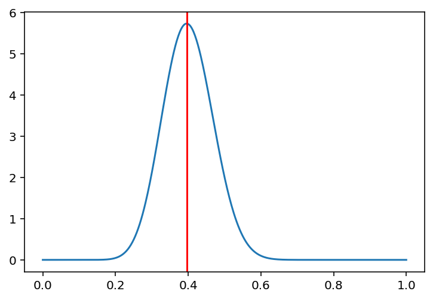

import torch
import matplotlib.pyplot as plt
dist = torch.distributions
%matplotlib inline
# retina
%config InlineBackend.figure_format = 'retina'alpha = 20
beta = 30
post = dist.Beta(alpha, beta)x_lin = torch.linspace(0., 1, 500)ys = post.log_prob(x_lin).exp()
plt.plot(x_lin, ys)
# MAP of post (Beta(20, 30))
theta_map = torch.tensor((alpha - 1) / (alpha + beta - 2))theta_maptensor(0.3958)plt.plot(x_lin, ys)
plt.axvline(theta_map.item(), color='red')<matplotlib.lines.Line2D at 0x7f6d507192e0>
f = lambda x: post.log_prob(x)
from torch.autograd.functional import hessian
scale = 1/torch.sqrt(-hessian(f, theta_map))
# Find gradient of log_post wrt theta
plt.plot(x_lin, post.log_prob(x_lin))
plt.axvline(theta_map.item(), color='red')
appx = dist.Normal(theta_map, scale)
plt.plot(x_lin, appx.log_prob(x_lin))
import jax
import tensorflow_probability.substrates.jax.distributions as tfdbeta_jax = tfd.Beta(alpha, beta)-jax.hessian(beta_jax.log_prob)(theta_map)TypeError: Argument '0.3958333432674408' of type <class 'torch.Tensor'> is not a valid JAX type.jax.hessian(beta_jax.log_prob(theta_map))TypeError: Expected a callable value, got 1.7470932006835938appx_posterior = dist.Normal(theta_map, )